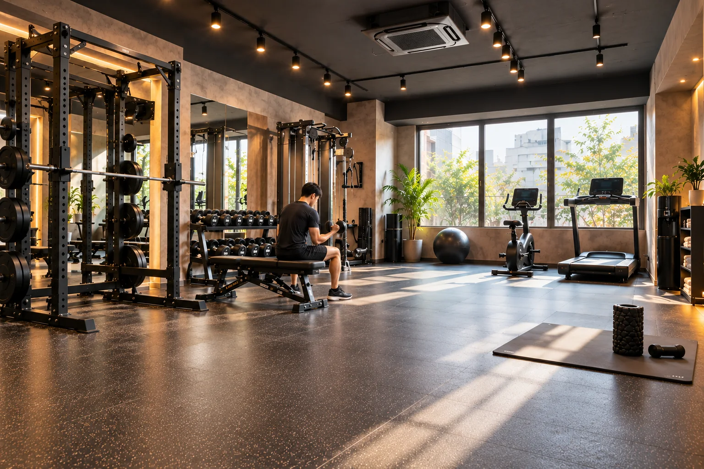
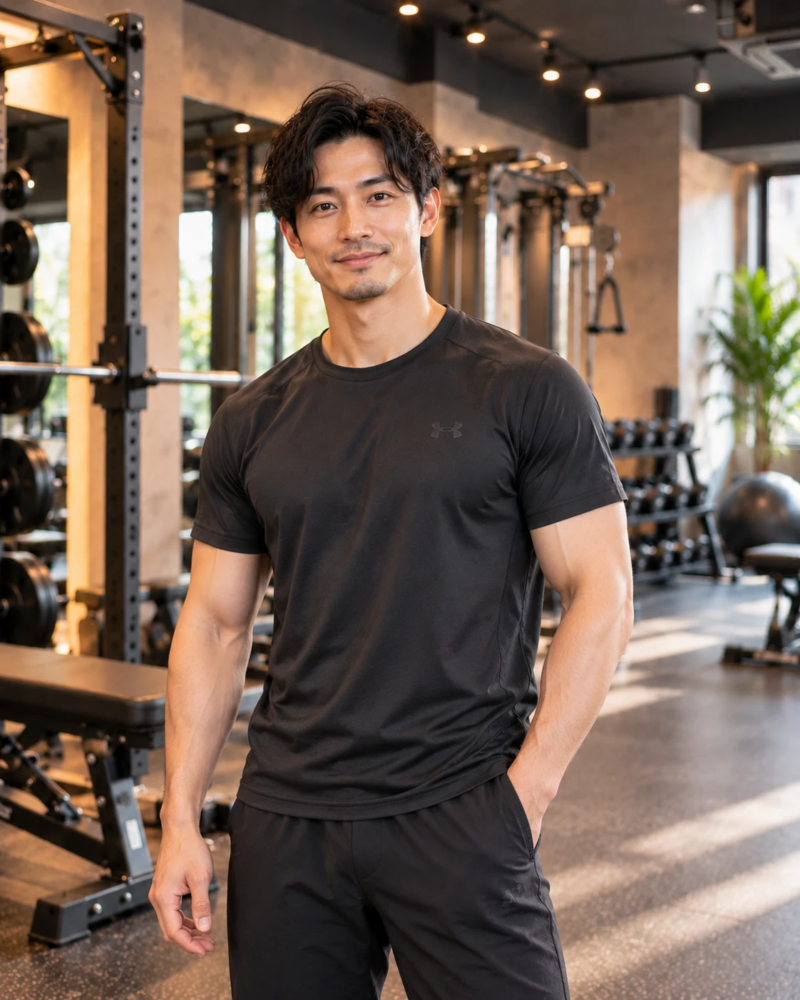
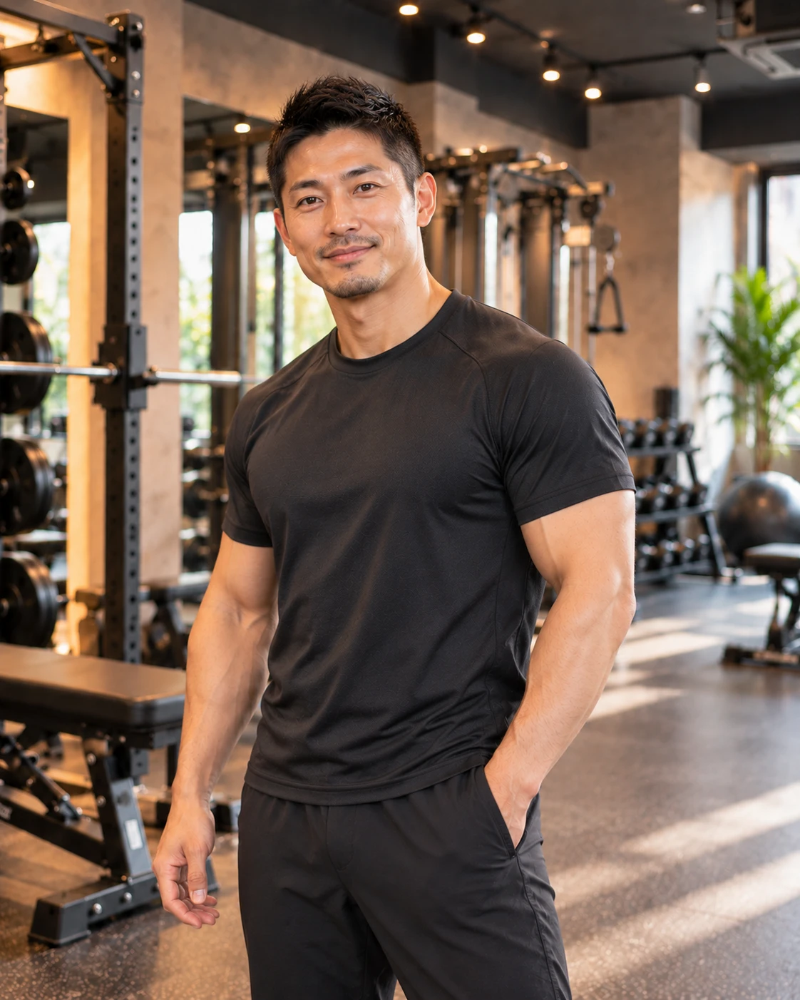
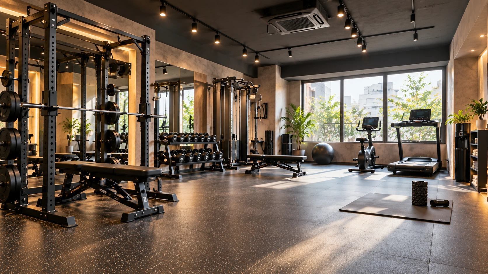

TRAINER 01
初心者・運動習慣
初めての方が無理なく動きを確認し、運動を続けるためのサポートを行います。
ABOUT SOLO GYM
予約した60分を、
自分だけの空間に。
01 / WHY SOLO GYM?
ソロジムは、一つのトレーニング空間を60分単位で予約する、完全貸切型のジムです。
誰かと場所を共有するジムにも、それぞれの良さがあります。ソロジムが選んだのは、予約した人が周囲を気にせず、自分の目的とペースに集中できる形です。
マシンの順番を待たず、予約した時間を自分のトレーニングだけに使えます。
利用中にいるのは、あなた一人。人目を気にせず、自分のペースを保てます。
SELFとPERSONALから、その日の目的に合う過ごし方を選べます。

02 / TRAIN AT YOUR PACE
トレーニングの順番も、休憩の取り方も、自分で決められます。初めての動きをゆっくり試したい日も、集中して取り組みたい日も、予約した空間は自分だけのものです。
分からないことやフォームに不安があるときは、PERSONALを追加してトレーナーのサポートを受けられます。
サービスの違いを見る03 / FOR YOU
TRAINERS
PERSONALでは、目的や悩みに合わせてトレーナーを選択できます。毎回受ける必要はなく、必要なときだけ追加できます。
TRAINER 01
初めての方が無理なく動きを確認し、運動を続けるためのサポートを行います。
TRAINER 02
目的と現在の状態を確認しながら、取り組みやすいトレーニングを一緒に考えます。

TRAINER 03
目指す体づくりに合わせて、種目の選び方やフォームをサポートします。

TRAINER 04
安全に取り組めるフォームを確認しながら、筋力向上を目指す時間を支えます。
TRAINER 05
動きやすさを意識し、姿勢やコンディションに合わせた運動をサポートします。

YOUR60 MINUTES.
完全予約制・完全貸切の空間で、
自分のトレーニングに集中できます。